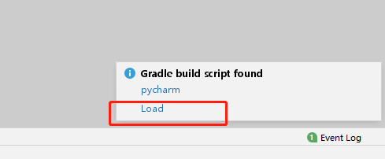
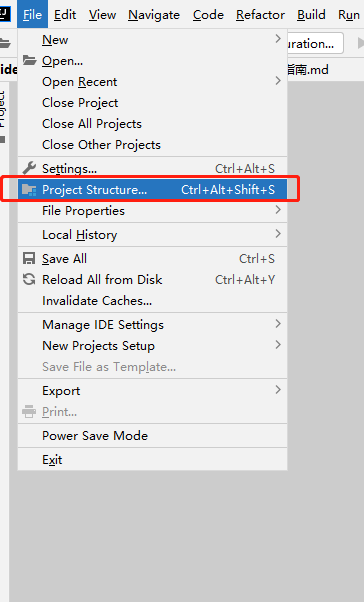
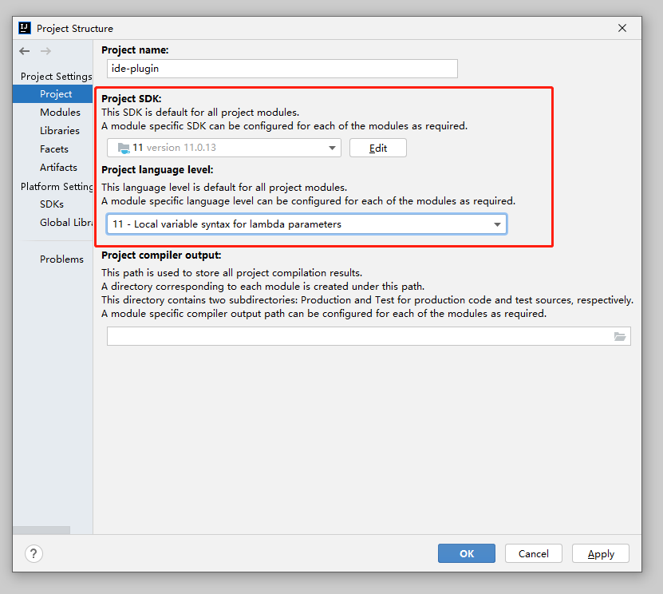
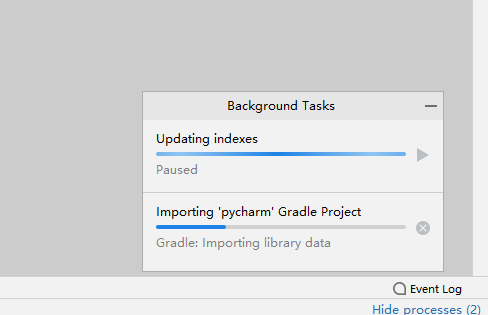

Source Code Compilation Guide

The following describes how to compile the MindSpore Dev ToolKit project based on the IntelliJ IDEA source code.
Background
MindSpore Dev ToolKit is a PyCharm plug-in developed using IntelliJ IDEA. IntelliJ IDEA and PyCharm are IDEs developed by JetBrains.
MindSpore Dev ToolKit is developed based on JDK 11. To learn JDK- and Java-related knowledge, visit https://jdk.java.net/.
Gradle 6.6.1 is used to build MindSpore Dev Toolkit and it does not need to be installed in advance. IntelliJ IDEA automatically uses the “gradle wrapper” mechanism to configure the required Gradle based on the code.
Required Software
JDK 11
Note: IntelliJ IDEA 2021.3 contains a built-in JDK named jbr-11 JetBrains Runtime version 11.0.10, which can be used directly.

Compilation
Verify that the required software has been successfully configured.
Download the project source code from the code repository.
Download the ZIP package.

Run the git command to download the package.
git clone https://gitee.com/mindspore/ide-plugin.git
Use IntelliJ IDEA to open the project.
3.1 Choose File > Open.

3.2 Go to the directory for storing the project.

3.3 Click Load in the dialog box that is displayed in the lower right corner. Alternatively, click pycharm, right-click the settings.gradle file, and choose Link Gradle Project from the shortcut menu.


If the system displays a message indicating that no JDK is available, select a JDK. Skip this step if the JDK is available.
4.1 The following figure shows the situation when the JDK is not available.

4.2 Choose File > Project Structure.

4.3 Select JDK 11.

Wait until the synchronization is complete.

Build a project.

Wait till the build is complete.

Obtain the plug-in installation package from the /pycharm/build/distributions directory in the project directory.
References
This project is built based on section Building Plugins with Gradle in IntelliJ Platform Plugin SDK. For details about advanced functions such as debugging, see the official document.